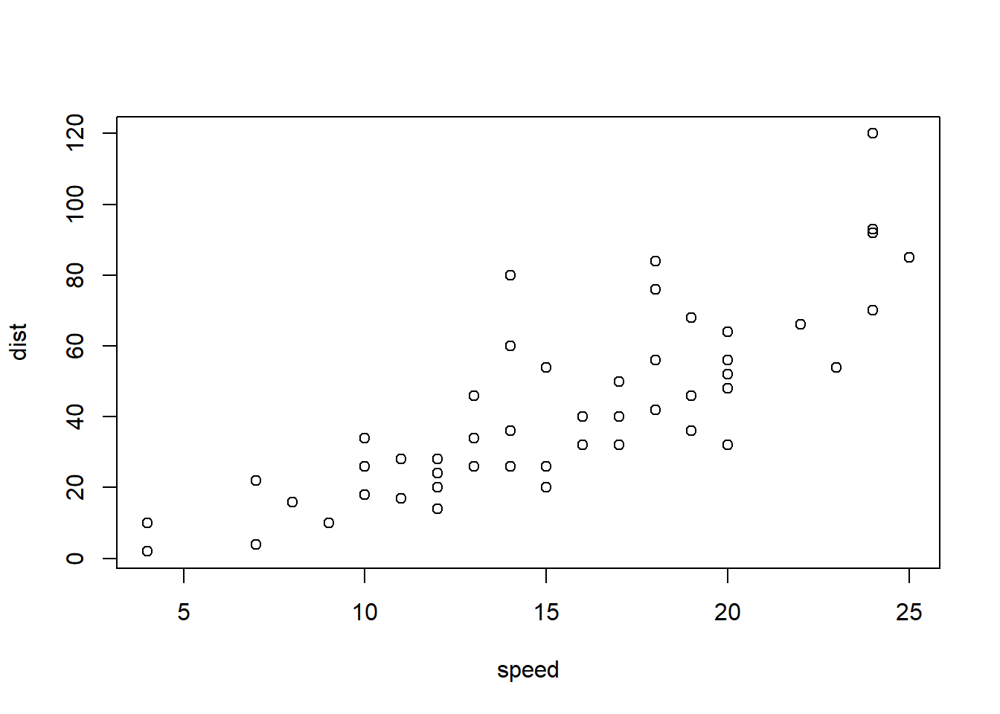
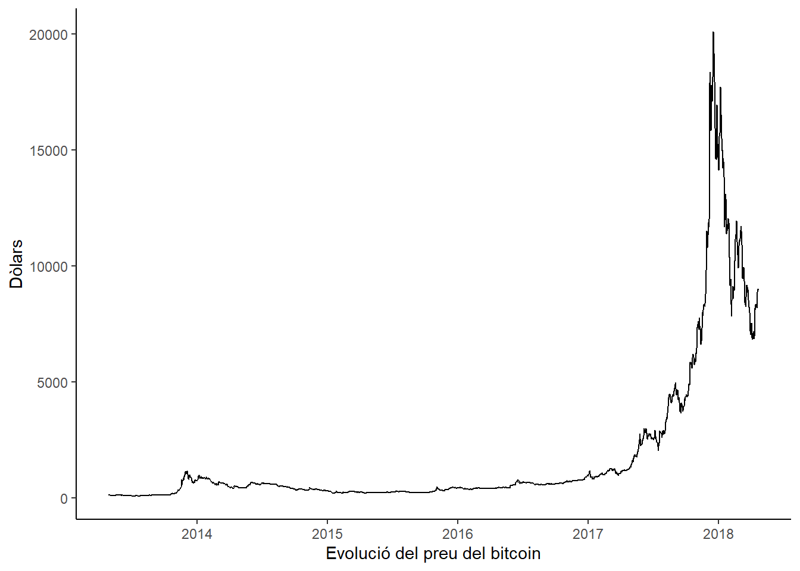

library(tidyverse)
library(knitr)Informe
Introducció
En primer, carreguem els paquets que necessitem
Carreguem les dades
dades <- read_csv2("data/empleats.csv")head(dades, 7)# A tibble: 7 × 13
id_empleat nom ciutat departament nivell_estudis edat anys_experiencia
<dbl> <chr> <chr> <chr> <chr> <dbl> <dbl>
1 1 Roger Ser… Sabad… Màrqueting Grau 23 0.3
2 2 Laia Puig Lleida Màrqueting Batxillerat 27 3.4
3 3 Carla Sala Tarra… Atenció al… Doctorat 22 0.3
4 4 Irene Prat Sabad… Vendes Doctorat 60 16.1
5 5 Gerard Ro… Barce… Atenció al… Grau 26 3.9
6 6 Roger Sala Tarra… Tecnologia Màster 45 5
7 7 Marta Rie… Sabad… Atenció al… Grau 46 17.1
# ℹ 6 more variables: salari_brut_anual <dbl>, vendes_mensuals <dbl>,
# satisfaccio_laboral <dbl>, hores_teletreball_setmana <dbl>,
# data_contractacio <date>, te_carnet_conduir <chr>Una presentació millorada:
knitr::kable(dades[1:10, 1:7])| id_empleat | nom | ciutat | departament | nivell_estudis | edat | anys_experiencia |
|---|---|---|---|---|---|---|
| 1 | Roger Serra | Sabadell | Màrqueting | Grau | 23 | 0.3 |
| 2 | Laia Puig | Lleida | Màrqueting | Batxillerat | 27 | 3.4 |
| 3 | Carla Sala | Tarragona | Atenció al Client | Doctorat | 22 | 0.3 |
| 4 | Irene Prat | Sabadell | Vendes | Doctorat | 60 | 16.1 |
| 5 | Gerard Roca | Barcelona | Atenció al Client | Grau | 26 | 3.9 |
| 6 | Roger Sala | Tarragona | Tecnologia | Màster | 45 | 5.0 |
| 7 | Marta Riera | Sabadell | Atenció al Client | Grau | 46 | 17.1 |
| 8 | Xavier Font | Lleida | Finances | Màster | 26 | 1.1 |
| 9 | Sara Soler | Sabadell | Atenció al Client | Doctorat | 56 | 26.9 |
| 10 | Jordi Vila | Girona | Màrqueting | Grau | 25 | 3.2 |
Característiques dels nostres empleats
L’edat mitjana dels nostres empleats és 39 anys.
mean(dades$edat)[1] 38.53571Subsecció 1 de la Introducció
Bla, bla, bla.
Podeu posar negretes i cursives.
Subsecció 2
A continuació, sumem 4 + 3.
a <- 4
b <- 3
c <- a + b
c[1] 7Aquí també podem carregar dades, per exemple datasets que venen per defecte en RStudio
data(cars)I mostrar les primeres files:
head(cars, 10) speed dist
1 4 2
2 4 10
3 7 4
4 7 22
5 8 16
6 9 10
7 10 18
8 10 26
9 10 34
10 11 17I fer un resum estadístic de les dues variables:
summary(cars) speed dist
Min. : 4.0 Min. : 2.00
1st Qu.:12.0 1st Qu.: 26.00
Median :15.0 Median : 36.00
Mean :15.4 Mean : 42.98
3rd Qu.:19.0 3rd Qu.: 56.00
Max. :25.0 Max. :120.00 Puc generar un gràfic a partir de les dades

Metodologia
Gràfic de l’evolució del bitcoin (versió millorada)
